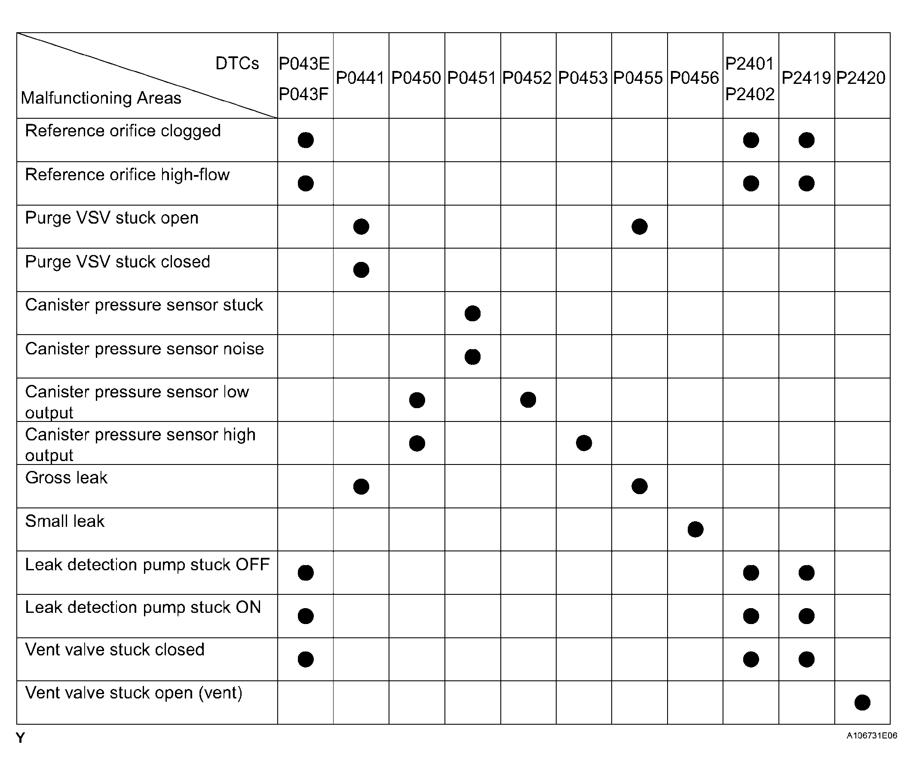

Related DTCS
EVAP SYSTEM - RELATED DTCS
| DTC No. | Monitoring Items |
|---|---|
| P043E | Reference orifice clogged (built into canister pump module) |
| P043F | Reference orifice high-flow (built into canister pump module) |
| P0441 |
|
| P0450 | Canister pressure sensor (built into canister pump module) voltage abnormal fluctuation |
| P0451 |
|
| P0452 | Canister pressure sensor (built into canister pump module) voltage low |
| P0453 | Canister pressure sensor (built into canister pump module) voltage high |
| P0455 | EVAP gross leak |
| P0456 | EVAP small leak |
| P2401 | Leak detection pump stuck OFF (built into canister pump module) |
| P2402 | Leak detection pump stuck ON (built into canister pump module) |
| P2419 | Vent valve stuck closed (built into canister pump module) |
| P2420 | Vent valve stuck open (vent) (built into canister pump module) |
| P2610 | Soak timer (built into ECM) |
If any EVAP system DTCs are set, the malfunctioning area can be determined using the table below.

Courtesy of © TOYOTA, LICENSE AGREEMENT TMS1002
NOTE:
If the 0.02 inch reference pressure difference between the first and second checks is greater than the specification, the DTCs corresponding to the reference pressure (P043E, P043F, P0441, P0455, P0456, P2401 and P2420) will all be stored.